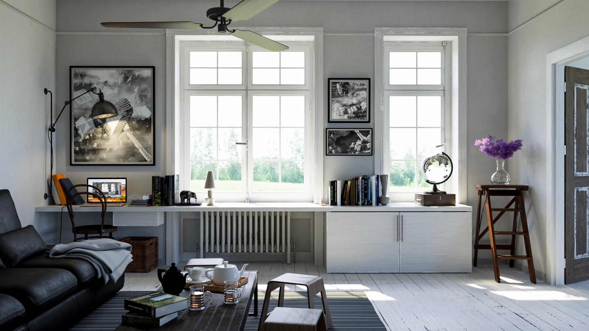

Takua Renderer
A physically-based photorealistic global illumination renderer

A modified Evermotion scene, rendered entirely with Takua Renderer. See this
blog post for more details.
Overview
Takua Renderer is a physically-based photorealistic 3D renderer I am writing from scratch in C++. Takua is built from the ground up as a global illumination renderer supporting global illumination through several different light transport algorithms, including unidirectional pathtracing with direct light sampling, Veach-style bidirectional pathtracing with multiple importance sampling, progressive photon mapping, and vertex connection and merging. The renderer is still a work in progress, but already supports a number of features, listed below. The ultimate objective of this project is to learn about building an advanced production-ready renderer.
There have been 8 major versions of Takua Renderer so far, with each version representing either a significant refactoring/rewrite and exploration of a new architecture, or a major evolution of the previous version. The current version of Takua Renderer is Revision 9, or Takua a0.9. Past versions are:
Takua a0.9: An evolution of Takua a0.8 with significant advances in production-grade features, including an expanded shading node library, support for tiled, mipmapped out-of-core texture caching, various shading improvements, light visibility controls, new light types, traversal speed improvements, additional subdivision modes, and more.
Takua a0.8: An evolution of Takua a0.7 with significant shading system improvements (including a general-purpose uber-Bsdf and a layering system), support for subdivision surfaces and displacement mapping, instancing improvements, large ray traversal speed improvements, light sampling improvements, and a checkpointing system for suspending/resuming renders.
Takua a0.7: An evolution of Takua a0.6 with significant architectural improvements; redesigned integrator system to a brand new path-space formulation light transport library; completely new advanced shading system.
Takua a0.6: An evolution of Takua a0.5 with significant improvements to overall speed, sampling strategies, light subsystem, and a rebuilt, much more efficient integrator system.
Takua a0.5: Brand new massively concurrent CPU renderer with a highly modular, plugin based architecture and multiple advanced light transport algorithms. Can also optionally make use of CUDA in certain plugin types. The design of Takua a0.5's core is considered stable and is meant to serve as a base for continued development.
Takua a0.4: Experimental CUDA/CPU hybrid unidirectional pathtracer with significant shared code paths between the CUDA and CPU rendering cores. Essentially a merger of Takua a0.3 and Takua a0.2.
Takua a0.3: Experimental CUDA unidirectional pathtracer built from scratch after gaining knowledge from building a previous GPU Pathtracer with Peter Kutz.
Takua a0.2: Experimental CPU unidirectional pathtracer built from scratch after gaining knowledge from building Takua a0.1.
Takua a0.1: My first CPU pathtracer.
This project has been under active development since 2012 and is my personal project outside of work. Takua Renderer is also currently used at Cornell University's Program of Computer Graphics as a research renderer.
A recreation of an Evemotion forest scene. See
this blog post for more details.
A Lamborghini Aventador with an interesting gold wireframe layered shader. See
this blog post for more details.
Features
Advanced Global Illumination: Full, physically based, consistent indirect illumination rendering through multiple advanced light transport. Supports unbiased unidirectional pathtracing with direct light sampling, unbiased bidirectional pathtracing with multiple importance sampling, consistent progressive photon mapping, and consistent vertex connection and merging. Integrators are all formulated around and built upon a centralized path-space library that provides building blocks for the path-space formulation of light transport.
Geometry: Supports arbitrary triangle and quad meshes with instancing. Also can support any other geometry type implemented through geometry plugins.
Advanced Instancing: In addition to regular instancing, supports instancing all geometry types at points from an input point file. This allows Takua to ingest instance lists from systems such as XGen or ForestPackPro.
Lights: Supports area lights with optimized rect light, disc light, sphere light, and dome light implementations. Light emittance can be driven by textures and animated. Also can support any other light type implemented through light plugins.
Materials and BSDFs: Supports physically based BRDFs, including multiple microfacet models (GGX, Beckmann, and Phong), smooth and rough versions of Fresnel conductors, specular and transmissive dielectrics, a physical clearcoat model, and diffuse transmission. Also includes support for full subsurface scattering through brute-force Monte-Carlo scattering. Also can support any other material type implemented through BSDF plugins.
Complex shading: Supports complex layered shaders combining an arbitrary number of materials and BSDFs via Disney-BSDF-styled parameter blending. A default advanced shader is included that incorporates multiple lobe types in an easy-to-control parameterization similar to the Disney Principled BSDF or the Arnold alShader system. Also supports bump mapping and normal mapping.
Textures: Supports loading an arbitrary number of arbitrarily sized textures in PNG and BMP format to drive any material property in the renderer. Takua also has a tiled, mipmapped texture caching system with support for out-of-core textures. Also can support any other texture type implemented through texture plugins.
Acceleration Structure System: Uses a two-level acceleration structure with an upper structure for the scene, and individual structures per geometry instance. Includes both a fully custom BVH traversal backend and a Embree 3 traversal backend. Also can support any other accelerator type implemented through accelerator plugins.
Hierarchical Adaptive Sampling: Supports adaptive sampling for automatic convergence detection. The adaptive sampling technique used is based on A Hierarchical Automatic Stopping Condition for Monte Carlo Global Illumination by Dammertz et al. Also can support any other sampling method implemented through sampler plugins.
Displacement/Subdivision: Supports Catmull-Clark subdivision surfaces and displacement mapping. Displacement surfaces can either be displaced on-the-fly, or cached.
Firefly Detection: Supports automatically identifying firefly pixels and firefly removal through supersampling and intensity clamping.
Distributed Effects: Supports transformational motion blur by sampling at multiple points in time, and supports physically correct depth of field through simulation of aperture shape and size and lens shape. All properties in the renderer can be set to vary over time.
Deformational Motion Blur: Supports deformational motion blur for animated meshes by interpolating vertex positions between frames. Also supports efficient acceleration structure creation for animated meshes.
Modular, Extensible Architecture: Takua is built around a raytracing core that is highly modular and extensible. Almost any component of the render can be replaced or extended with a new module, and most renderer subsystems have a plugin API to make adding new functionality and features easy.
Massively Concurrent: Takua achieves highly efficient parallelism through task-based concurrency via Threaded Building Blocks and scales near linearly up to large numbers of cores (tested up to 25\ so far). Previous revisions of Takua drew inspiration from concepts presented by Rob Pike and the GoLang team, and by Eisenacher et al.'s Sorted Deferred Shading for Production Path Tracing paper, but Takua's threading model today has evolved in a different direction.
Scene Loading: Uses a custom scene format defining geometry, lights, materials, camera settings, render settings, animation over time, and more.
Image Output: Outputs BMP or PNG images and includes antialiasing through jittered supersampling. Also includes gamma correction for final renders. Z-Depth passes can be output alongside color passes.
Interface: Includes a live viewer mode built using GLFW that displays the render as it progresses. Also includes an interactively raytraced preview view for scene files.
Checkpointing: Renders can be checkpointed out to a custom checkpoint file format on disk, and the renderer can be restarted from a checkpoint file.
Hardware Architecture: Takua is primarily a CPU renderer designed to run on x86-64 hardware. CUDA can optionally be used in plugins to offload select components and workloads to NVIDIA graphics cards, but the core renderer is highly optimized C++ that runs on the CPU.
Build Toolchain: Takua is written using C++14 and builds on macOS using the native Clang/LLVM included with Xcode, on Windows using Visual Studio, and on Fedora Linux using GCC. Takua uses CMake for build file generation.
Another view of the forest from above, with depth of field. All of the plants are placed using instance particle sets exported from XGen in Maya.
Another view of the Evermotion room from above, featuring Physically Based Rendering 3rd Edition.
Another view of the Evermotion room, focused on the glass mugs of tea. Deep refraction and
attenuated transmission are visible in the tea.

A complex scene rendered using Takua Renderer's Vertex Connection and Merging implementation. The poster on the back wall is by
Alice Yang, the two main furniture pieces are by
ODESD2, the flowers are a heavily modified version of a model by
Andrei Mikhalenko, and the Braun SK4 record player model is by
Bertrand Benoit. All textures, shading, and other models are my own.

Nearly a quarter of a billion triangles. Rendered using bidirectional pathtracing with multiple importance sampling. See
this blog post for more details.

A render of a 2 million triangle Venus sculpt by
Zia Zhu. Rendered using unidirectional pathtracing with direct light sampling. See
this blog post for more details.

Still life scene with various complex materials. Rendered using Vertex Connection and Merging.

Rendered using bidirectional pathtracing with multiple importance sampling.

Rendered using bidirectional pathtracing with multiple importance sampling.

Recreation of the Veach thesis multiple importance sampling test scene. Rendered using bidirectional pathtracing with multiple importance sampling. See
this post for more details.

Recreation of the famous Cornell Box. This scene was constructed from the original measured data for the original box. Rendered using Vertex Connection and Merging.

Globe rendered using hierarchical adaptive sampling and Vertex Connection and Merging. See
this post for more details.

A render of the book upon which this project draws a lot of resources from. Rendered with bidirectional pathtracing and multiple importance sampling.

A ground glass chessboard. Rendered with bidirectional pathtracing and multiple importance sampling.
Planned Future Improvements
More Light Transport: Support for Metropolis Light Transport is being considered. Support for a hybrid MLT-VCM approach is also being looked in to.
Volumetric Rendering: A integrated system for volumetrics and scattering is planned. The planned approach is to implement the Unified Points, Beams, and Paths algorithm by Krivanek et al. and presented at SIGGRAPH 2014. OpenVDB integration is also planned.
Software Integration: Maya and Houdini integration are being considered.
Dispersion/Diffraction: Support for wavelength based splitting of light into component colors to achieve effects like diffraction is planned.

A render of the Stanford Dragon exhibiting subsurface scatter through brute force Monte-Carlo scattering. Lighting was calculated all indirectly through unidirectional pathtracing. No modifications have been made to this image outside of the renderer.

A render of the Stanford Dragon with a glass material inside a Cornell-Box type environment, with an extremely shallow depth of field.

A render of a test scene demonstrating texture-driven color, glossiness, reflectance, and index of refraction.

A render from Takua Renderer demonstrating a number of textures with various UV transforms applied. Note the lack of aliasing and moire-patterns in textured surfaces.

Eames Lounge Chair Wood lit with a single large area light (off camera) and glossy wood and rough aluminum materials. Approximately 2 minutes rendering time using CUDA mode.

A heatmap showing the cost of traversing through a KD-Tree build for the Stanford Dragon. Areas with brighter red indicate more expensive ray-intersection tests, whereas darker areas are cheaper to test.

A test render of the Stanford Dragon on a white backdrop with a standard studio style lighting setup.

A test render of a approximately 100000 poly Deloreon model on a white backdrop with a standard studio style lighting setup.

A render of a 200000 polygon Lamborghini Aventador model. Lighting was calculated all indirectly through unidirectional pathtracing, entirely on the GPU through CUDA. The render took about 1.5 hours to generate approximately 25000 samples per pixel. No modifications have been made to this image outside of the renderer.
An animated sequence consisting of 300 frames. Each frame took approximately one minute to render with 5000 samples per pixel.
Acknowledgements
This project would not be possible without the guidance of Joseph T. Kider, Don Greenberg, Aline Normoyle, Patrick Cozzi, and Norm Badler. Also, friends Harmony Li, Gabriel Leung, and Dan Knowlton have been instrumental as sounding boards for ideas and partners for discussion. Numerous discussions with Peter Kutz have provided me with a number of critical insights and his Photorealizer project is what inspired me to undertake this project. Finally, countless people in industry and academia have been kind enough to talk with me and provide encouragement at conferences such as SIGGRAPH and at places I have worked.
Project Blog Posts
I am posting progress updates for Takua Renderer to my development blog, Code & Visuals. The following posts detail the ongoing development of this project. Posts are listed starting with the most recent:
Resources
In the process of building Takua Renderer, I have drawn upon the following papers, books, and articles. They are listed in no particular order. This list, of course, is nowhere near complete; many more resources are cited on my blog in various posts.
Physically Based Rendering: The go-to reference book for rendering, by Matt Phar and Greg Humphreys.
Light Transport Simulation with Vertex Connection and Merging: Georgiev et al.'s 2012 paper introducing the VCM algorithm.
Implementing Vertex Connection and Merging: Iliyan Georgiev's technical report describing implementation details for VCM.
Progressive Photon Mapping: Hachisuka et al.'s 2008 paper presenting a progressive extension to photon mapping.
Stochastic Progressive Photon Mapping: Hachisuka et al.'s 2009 paper extending PPM to handle distributed effects such as depth of field and motion blur.
Progressive Light Transport Simulation on the GPU: Survey and Improvements: Davidovic et al.'s 2012 paper discussing a variety of light transport algorithms.
Sorted Deferred Shading for Production Path Tracing: Eisenacher et al.'s 2013 paper describing the architecture of Walt Disney Animation Studios' production renderer, Hyperion.
Light Transport on Path-Space Manifolds: Wenzel Jakob's 2012 Cornell PhD thesis on Metropolis Light Transport and Manifold Exploration.
Efficient Monte Carlo Methods for Light Transport in Scattering Media: Wojciech Jarosz's 2008 UCSD PhD thesis on Monte Carlo rendering for participating media.
The Rendering Equation: The original 1986 paper presenting the global illumination rendering problem and pathtracing solution, by James Kajiya.
Robust Monte Carlo Methods for Light Transport Simulation: Eric Veach's 1997 Stanford PhD thesis presenting the Metropolis Light Transport method. Also contains useful information on unidirectional and bidirectional pathtracing.
Physically Based Lighting at Pixar: Christophe Hery and Ryusuke Villemin's SIGGRAPH 2013 course notes on physically based rendering.
Mitsuba: Wenzel Jakob's research renderer.
Embree: Intel's open source high performance ray tracing kernels.
Threaded Building Blocks: Intel's open source parallel C++ toolkit.
Realistic Image Synthesis Using Photon Mapping: Henrik Wann Jensen's Photon Mapping book.
Reflections and Refraction in Raytracing: A paper detailing the math behind reflection and refraction, by Bram de Greve.
Realistic Image Synthesis Using Photon Mapping: The original photon mapping book covering general GI problems and the photon mapping algorithm, by Henrik Wann Jensen.
A Hierarchical Automatic Stopping Condition for Monte Carlo Global Illumination: Dammertz et al.'s 2009 paper on a hierarchical adaptive sampling algorithm.
Consistent Normal Interpolation: Reshetov et al.'s 2010 paper on a better normal interpolation algorithm.
The Direct Lighting Computation in Global Illumination Methods: Changyaw Wang's 1994 Indiana University, Bloomington PhD Dissertation detailing the direct lighting component in GI.
Models of Light Reflection for Computer Synthesized Pictures: James Blinn's 1977 paper on the Blinn-Phong shading model.
Active Thread Compaction for GPU Pathtracing: Ingo Wald's 2011 paper on thread compaction as an acceleration technique for GPU pathtracing.
Real-Time KD-Tree Construction on Graphics Hardware: Kun Zhou's 2008 paper on short-stack KD-Tree construction and traversal.
Stackless KD-Tree Traversal for High Performance GPU Ray Tracing: Stefan Popov's 2007 paper on stackless KD-Tree traversal through rope-based KD-Trees.
Interactive KD-Tree GPU Raytracing: Daniel Horn's 2007 paper on various GPU KD-Tree traversal techniques, including short-stack while-while traversal.
Parallelizing the Physics Pipeline: Physics Simulations on the GPU: Takahiro Harada's 2009 GDC talk on GPU physics. The relevant part for this project is the section on history-flag based stackless KD-Tree traversal.
Working with Ellipses: An article by Inigo Quilez on quirks with calculating ellipse bounding boxes and other math.
Fresnel Equations Wikipedia Article: A good overview of the math behind Fresnel reflection/refraction.
KD-Tree Wikipedia Article: A description of the KD-tree spatial partitioning data structure.
KD-Tree Assignment Description: A summary of how kd-trees work from a Stanford University computer science course's homework assignment.
Writing A Pathtracer: An incomplete, but nonetheless useful primer on some basic pathtracing concepts, by Nikita Nikishin.
Wikipedia Pathtracer Article: A fairly concise description of the pathtracing concept.
Bidirectional Reflectance Distribution Function Wikipedia Article: General summary of what BRDFs are and how they work.
Bidirectional Scattering Distribution Function Wikipedia Article: Describes what BSDFs are and how they differ from BRDFs.
Ray Tracey's Blog: Sam Lampere (Ray Tracey)'s blog following the development of OTOY's Brigade Engine.
Photorealizer: Physically-Based Renderer Blog: Peter's Kutz's development blog for Photorealizer.
Renderspud Blog: Mike Farnsworth's development blog for Renderspud.
CIS460 Computer Graphics Notes: An extremely detailed and thorough set of slides created by Professor Norm Badler for his course CIS460: Computer Graphics at the University of Pennsylvania. Unfortunately, Professor Badler's notes are not available publicly.
Simon's Graphics Blog: Simon Brown's pathtracing development blog.
OMPF2: A rendering enthusiast forum and discussion board.
{kind=link}
{kind=link}
{kind=link}
{kind=link}
{kind=link}
{kind=link}